CSC 476 AU / Homework 3 / Image Blending Using Pyramids
Link to the Colab Notebook
A fully blended image.
This project involved using fourier transformations on different wavelengths and using the laplacian and gaussian pyramids of images to compress them and to blend them with other similar images. There were six problems which we were trying to solve
- Discrete and continuous signals
- Complex signals
- Fourier transformations of translated signals
- Fourier frequency analysis
- Fourier domain
- Image blending
Discrete and continuous signals
Seperating a function into it's discrete and continuous counterparts was relatively easy to do. All that is needed is to sample the variable t over a space of time and plot it as a stem plot, alongside the regular plot that comes with an equation
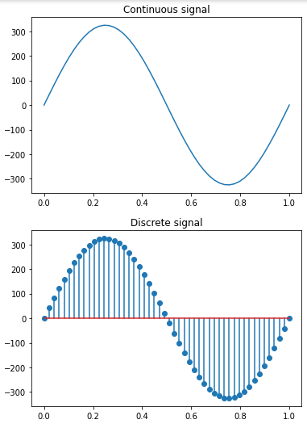Complex Signals
seperating and graphing real and imaginary signals, or "complex" signals is also pretty easy to do in python. By taking the equation and using the .real or .imag operation, the work is essentially done for you.
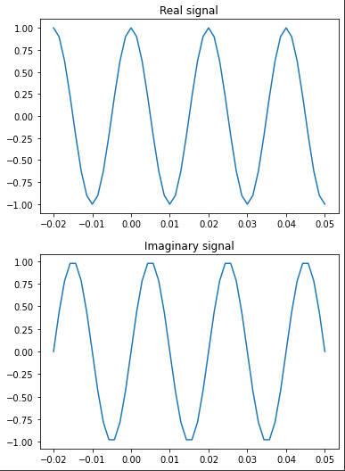Shifted Fourier Transformations
After working for a while with fourier transformations of 2d images, dealing with a simple wave function like we deal with in this code was not too difficult. In this section, we simply take an equation, it's fourier transformation, and its fourier magnitude and graph it. The hard part is that we have to do that two more times for the shifted functions. The important thing to recognize with this is that while the shifted equations make the equation and the fourier transformations look different, the magnitudes of the fourier transformations always remains the same, regardless of the shift.
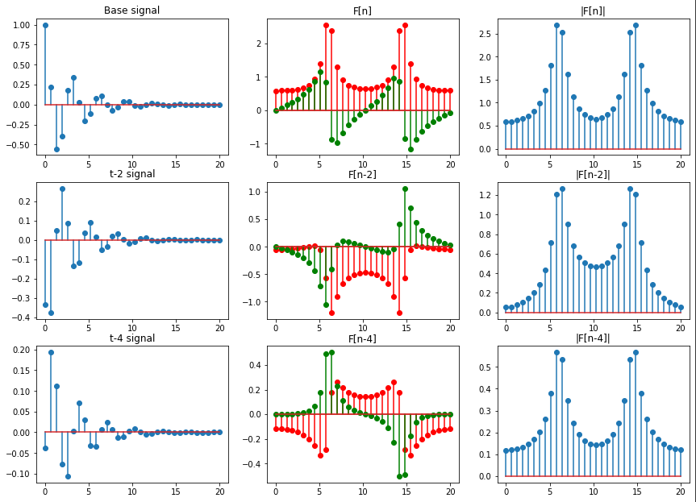Fourier frequency analysis
Of all the sections, I am least sure of my work in this section. The goal was to "Plot the Fourier transform of the following function for frequency below 50hz." I tried my best, but I am not totally sure if I got it all right.
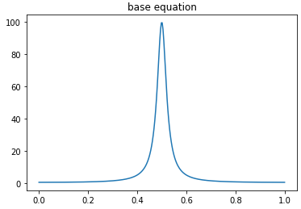 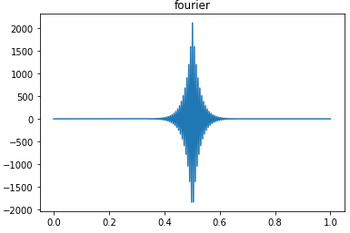 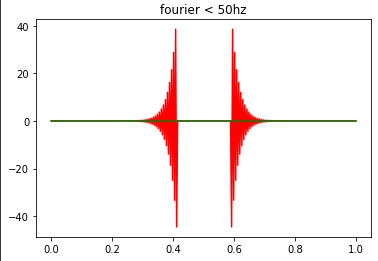Fourier transformations
Using the fourier and the real domains, this sections was all about recreating specific patterns in the real domain by placing white dots on a black background in the fourier domain. While we have gone over this in class a bit, actually placing the dots definitely helped to nail down to the concepts which we have been learning. It also helped me with my python array navigation, since I am still not great at that.

Image Blending and Pyramids
Laplacian and Gaussian pyramids are an essential aspect of image storage, because they are able to reduce the amount of data that needs to be stored in order to get a full resolution image. They are also really helpful for combining images. Starting off, I'll explaing how I created my pyramids. Starting with a full sized image, that image is blurred, and then every other pixel is taken away. The Laplacian is the difference between the blurred image and the original. This is done multiple times until the image can no longer be shrunk anymore. A complete image pyramid looks like this:
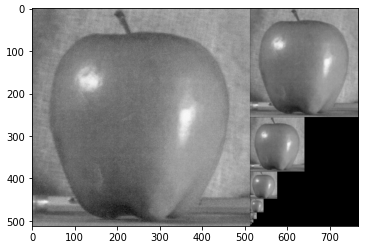 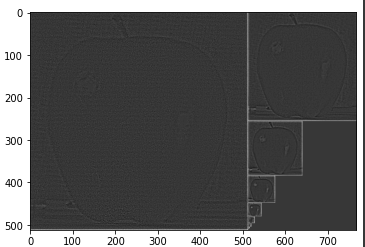The image on the left represents the blurred and shrunken images, while the pyramid on the right represents the Laplacians, or the differences the each blurring creates. When we enlarge a Gaussian in the same way we shrink it and add it's Laplacian back in, it will look similar to the original image. This is how we can store images effectively.
This can also be used to blend multiple images together. By creating a mask and only allowing an image to repopulate one half of the image and having a seperate photo fill the other, we can create a gradient from one image to the other. An important aspect of the pyramid is that it also has to be blurred, otherwise there will be no gradient. This means that we have to have multiple different pyramids, 2 Laplacians (one for each photo), and 1 Gaussian (for the Mask). Once all of those have been built, they can be combined something like this to create the blending that you see below:
%example code
for i in range(len(AppleLaplacian)):
blended= interpolate(blended)
blended += (AppleLaplacian[i] * (MaskGaussian[i])) + (OrangeLaplacian[i] * (255-MaskGaussian[i]))
Image blending with laplacian and gaussian pyramids:
| 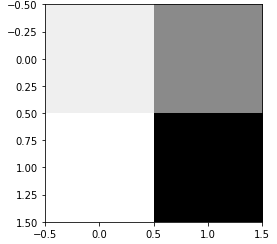 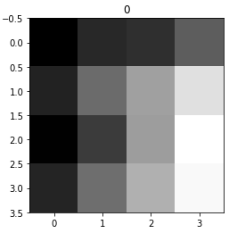 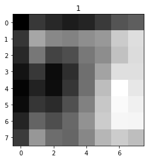 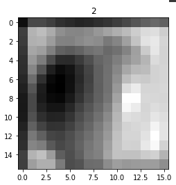 |
| 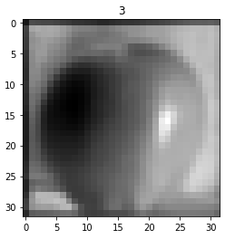 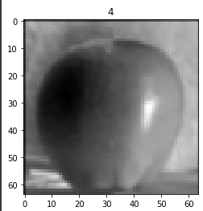 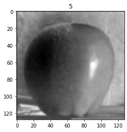 |
Overall, this homework took me a while to finish, although I spent a decent amount of time trying to figure out how to work with color images or move images from B&W into color. In the end, I decided it was more worth my time to have solutions to everything rather than have the perfect solutions to some problems. I also spent a decent amount of time trying to figure out how the code that you was given to us works, but once I found out how to work with that it wasn't too hard to complete the image blending (which took me the most time by a significant margin). Not everything came out perfect, but I do think that most of it came out good enough.